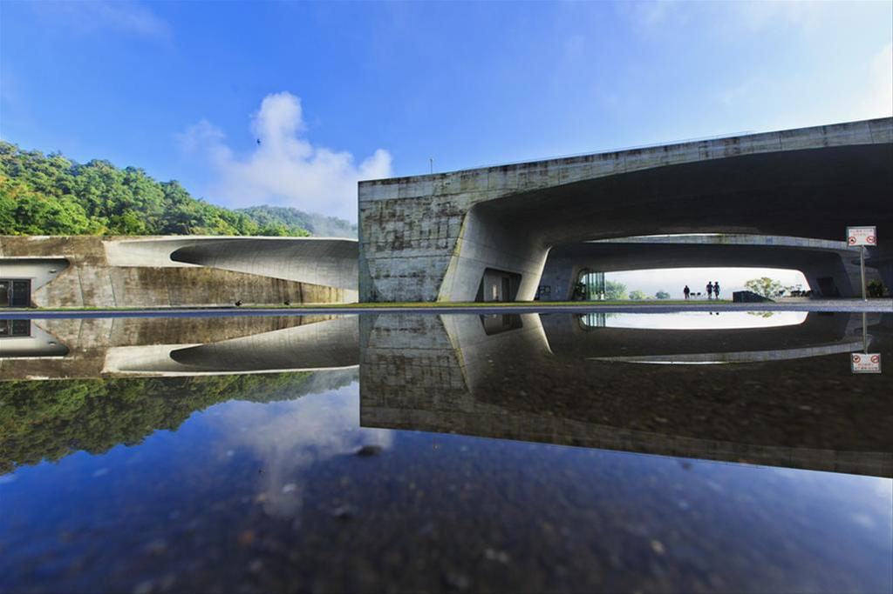
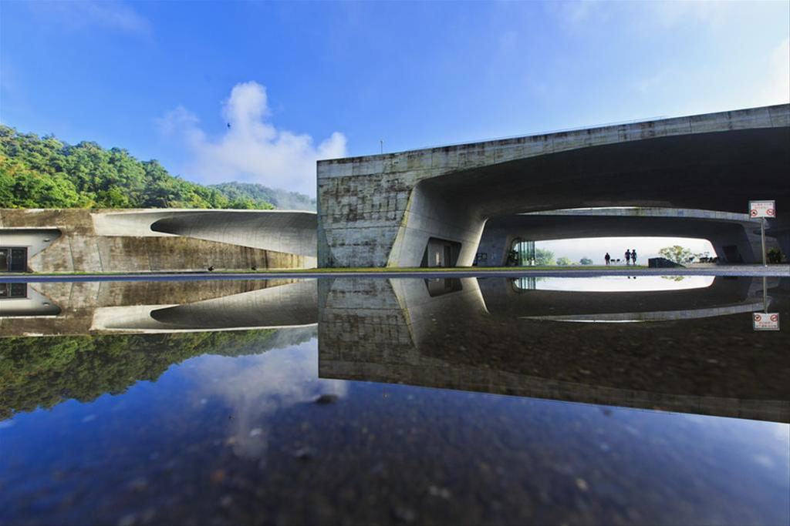

NEWS
With an eye toward attracting more senior travelers, the Tourism Administration, Ministry of Transportation and Communications (MOTC), is set to launch a "Golden Years Tours" certification system
Dec 08, 2023
Overseas Visitors Ride High-Speed Rail in Taiwan: Buy One, Get One Free! First-month offer includes Taoyuan Airport MRT Round Trip Ticket + Taipei Metro 72-Hour Pass
Dec 01, 2023
[Taiwan Tourism Events] Welcoming the New Year
Nov 01, 2023
The “Taiwan Tourist Shuttle" has opened 18 new routes and increased service frequency by more than 1,400 service trips every month to improve public transportation services at tourist attractions
Sep 14, 2023
SIGHTSEEING
Northern Taiwan
Central Taiwan
Southern Taiwan
Eastern Taiwan
Offshore Islands
Northern Taiwan


"Northern Taiwan" refers to the following seven counties and cities: Taipei City, New Taipei City, Keelung City, Yilan County, Taoyuan City, Hsinchu County and Hsinchu City. You may enjoy a bird's-eye-view of the capital from Taipei 101, the Taiwan's tallest building, go to National Palace Museum for appreciating historic objects, or take a walk on old streets in Jiufen, Tamsui, Yingge and Sanxia to immerse in old-time charm.
Central Taiwan
 


"Central Taiwan" refers to the following five counties and cities: Miaoli County, Taichung City, Changhua County, Nantou County, and Yunlin County. Located at the heart of Taiwan, these places are ideal for travel as the climate is mild. Many holiday villages and theme parks suitable for young and old can also be found here. If you like culture and art, you must not miss the wood carving studios and pottery kilns in Miaoli, where DIY classes are available. National Taiwan Museum of Fine Arts and National Museum of Natural Science are worth some close explorations. Yunlin is known to the world as the place of origin of puppet theatre. It is also worth some fine appreciation.
Southern Taiwan


Southern Taiwan is full of history and culture. Tainan City is the island's oldest city. Until the late 19th century, it had also been a political, economic and cultural hub. Thus, the city features plenty of historic sites. The Tropic of Cancer passes through Chiayi County, and thus Tropic of Cancer Solar Exploration Center has been built to highlight the city's unique geographical trait. World-famous Alishan Forest Recreation Park boasts high-elevation forest railways and off-the-beaten-track old hiking trails, making it a must-see for visitors in Taiwan.
Eastern Taiwan


Eastern Taiwan includes two counties, Hualien and Taitung. It faces the vast Pacific Ocean on the East and leans against the Central Mountain Ridge on the West. Standing in between such magnificent waters and mountains, when the Portuguese sailed by during their early explorations, they exclaimed "formosa," meaning "how beautiful" in their language. That's how Taiwan acquired its other name "Formosa," and this reveals how beautiful eastern Taiwan is. Eastern Taiwan is blessed with lots of natural resources, an old farming culture, and kind-hearted locals. Known as the "back yard" of Taiwan, it is ideal for a slow trip. Take a walk on this paradise on Earth, take some deep breaths, and breathe in sweet air. Long stay is recommended here.
Offshore Islands


Other than the main island, Taiwan has plenty of small surrounding islets, administered by counties such as Penghu, Kinmen and Lienchiang. Once a forbidden military zone, Kinmen today is a popular tourist area. Its three specialties – steel knives, peanut candies, and sorghum wine, are long-time best sellers. Matsu's old wine and the sorghum wine of Tunnel 88 have a resounding taste.
FESTIVALS
The Chinese New Year, also known as the Spring Festival, is celebrated from the first to the fifth day of the first month of the Chinese lunar calendar. Literally, Chinese people refer to this festival as "passing the year," which means shooing out the old and welcoming the new; it is considered the most important Chinese holiday of the year. There are a number of related customs and traditions that go along with the festival. Normally, on the 23rd or 24th day of the last month of the Chinese lunar calendar, people sacrifice to the Hearth God and send him off on his annual journey to Heaven; this signals the start of the Chinese New Year holidays.

The Lantern festival is also known as the "little New Year." Aside from the usual worship of the gods, the occasion involves guessing lantern riddles, eating rice-flour dumplings, and releasing lanterns into the sky in New Taipei City's Pingxi Township. The Yanshui Beehive Rocket Festival in Tainan County is another major event during the Lantern Festival. Colorful lanterns of all sizes and shapes have always been main attractions of the Lantern Festival, which is celebrated with a grand national festival and other major festivals in Taipei and Kaohsiung.
The Qingming Festival or Ching Ming Festival,also known as Tomb-Sweeping Day in English (sometimes also called Chinese Memorial Day, Ancestors' Day, the Clear Brightness Festival, or the Pure Brightness Festival), is a traditional Chinese festival observed by ethnic Chinese in mainland China, Hong Kong, Macau, Taiwan, Malaysia, Singapore, Cambodia, Indonesia, Philippines, Thailand, and Vietnam. A celebration of spring, it falls on the first day of the fifth solar term (also called Qingming) of the traditional Chinese lunisolar calendar. This makes it the 15th day after the Spring Equinox, either 4, 5 or 6 April in a given year. During Qingming, Chinese families visit the tombs of their ancestors to clean the gravesites and make ritual offerings to their ancestors. Offerings would typically include traditional food dishes and the burning of joss sticks and joss paper. The holiday recognizes the traditional reverence of one's ancestors in Chinese culture.
Together with the Chinese New Year and the Mid-Autumn Moon Festival, the Dragon Boat Festival is one of Taiwan's three major annual traditional holidays. Because of its origins and customs, it is closely related to the remembrance of Qu Yuan, a poet who lived during the Warring States Period. That is why, from ancient times, people have also referred to the Dragon Boat Festival as the" Poet's Festival."
The seventh month of the Chinese lunar calendar is Ghost Month. Traditionally, it starts from dawn on the first day of the month, when the gates of the netherworld open, and ends on the 29th day of the month, when the gates close. During the festivities of the month, which reach a peak on the 15th day, people hold rituals to solicit salvation from disaster and misfortune.
The Mid-Autumn Festival, also called the Moon Festival, is the holiday with the most romantic atmosphere. Because this holiday occurs during the autumn, when the harvest season is over, people in earlier days chose this day to make offerings and thank the gods for the bountiful harvest. The celebration has become a time for families to get together. The most familiar myth concerning this festival is that Chang-e flying to the moon after secretly drinking her husband's elixir of life. Aside from this, there are also tales of the Jade Rabbit and of "Wu Gang chopping down the cassia tree."